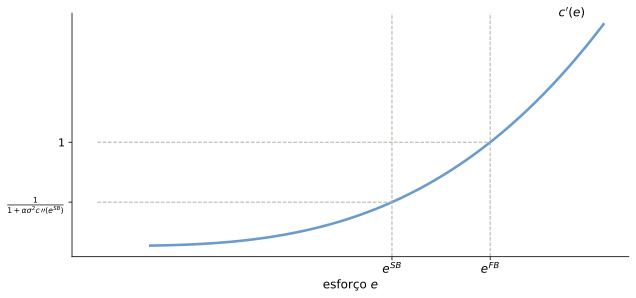
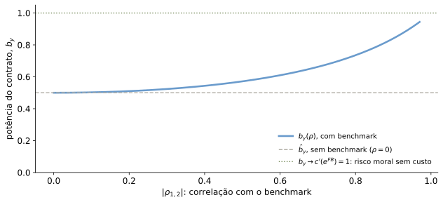

Risco Moral (Moral Hazard) e Política de Remuneração
Felipe Iachan
Onde estamos
Aula 13: seleção adversa — tipos ocultos (qualidade da firma)
Aula 14: ações ocultas depois do crédito tomado (debt overhang, risk shifting) e ações ocultas que limitam o crédito (renda penhorável, racionamento)
Hoje: ações ocultas dentro do contrato de remuneração — como pagar um gestor cujo esforço ninguém observa?
A pergunta
Se o esforço do gestor é invisível, que contrato de remuneração induz esforço sem impor risco demais?
O roteiro de hoje
flowchart LR
A["Ambiente CARA-Normal:<br/>1 ação contínua"] --> B["First-best:<br/>seguro perfeito"]
B --> C["Second-best:<br/>trade-off risco × incentivo"]
C --> D["Duas ações:<br/>razão de verossimilhança"]
C --> E["Benchmarking:<br/>desempenho relativo"]
Mesma lógica (risco vs. incentivo), três formas de olhar para ela.
Motivação
CARA_Normal_MH.lyx
Ações do gestor não são observáveis
Como garantir que os gestores se empenhem?
Qual a política de remuneração ótima?
Potência (força dos incentivos) do contrato
Ponderação entre exposição ao risco e incentivos
Dois grupos de agentes
Acionistas — neutros ao risco (Mandante/Principal):
\[ U^{acionistas} = \mathbb{E}\left[y-w\right] \]
Gestor — avesso ao risco (Agente), preferência CARA sobre salário e esforço:
\(\epsilon\): fatores fora do controle do gestor — ruído, condições agregadas
Timing do contrato
flowchart LR
A["Acionistas<br/>oferecem w(y)=a+by"] --> B["Gestor escolhe<br/>esforço e (oculto)"]
B --> C["Natureza sorteia<br/>ε ~ N(0,σ²)"]
C --> D["Produto y=e+ε<br/>é realizado"]
D --> E["Salário w=a+by<br/>é pago"]
O esforço é escolhido antes de \(\epsilon\) e nunca é observado diretamente pelos acionistas.
Restrição ao contrato: incentivo linear
\[ w=a+by \]
Pagamento é linear no produto observado \(y\)
\(a\): parte fixa; \(b\): potência do contrato (sensibilidade ao desempenho)
Contratos lineares são a forma canônica de estudar o trade-off risco-incentivo — e são ótimos em ambientes CARA-Normal dinâmicos.
First-best: divisão ótima de risco
Esforço observável (ou contratável). No first-best:
Divisão ótima de risco: acionistas ficam com todo o risco da firma
Gestor é compensado apenas pela desutilidade do esforço:
\[ w^{FB}=c\left(e^{FB}\right) \]
Contrato exige um nível determinado de esforço — sem custo de incentivos
First-best: otimização
Acionistas escolhem o esforço que maximiza o excedente total:
\[ \max_{e}\;e-c\left(e\right) \]
CPO:
\[ 1=c^{'}\left(e^{FB}\right) \]
Esforço eficiente: benefício marginal (1) = custo marginal do esforço.
Second-best: esforço não observável
Esforço não pode ser observado, nem escrito no contrato
Incentivo precisa ser provido explicitamente, via \(w\left(y\right)=a+by\)
Completando o quadrado, com \(\left(\mu+c\sigma^{2}\right)^{2}=\mu^{2}+2c\mu\sigma^{2}+c^{2}\sigma^{4}\):
\[ \mathbb{E}\left[e^{cx}\right]=e^{c\mu+\frac{c^{2}\sigma^{2}}{2}}\underbrace{\int_{-\infty}^{\infty}(2\pi\sigma^{2})^{-\frac{1}{2}}e^{-\frac{\left(x-\left(\mu+c\sigma^{2}\right)\right)^{2}}{2\sigma^{2}}}dx}_{=1,\ \text{densidade de uma normal}} \]
Aplicando ao gestor: equivalente-certeza
Usando \(\mathbb{E}\left[e^{cx}\right]=e^{c\mu+c^{2}\sigma^{2}/2}\) com \(c=-\alpha b\), \(\mu=e\):
\(b\) é a potência do contrato e, pela IC, o custo marginal de esforço no equilíbrio, \(c'(e^{SB})\) — não o esforço \(e^{SB}\) em si (que é \(b/c\), e só coincide numericamente com \(b\) quando \(c=1\))
Quanto maior \(\alpha\) (aversão ao risco) ou \(\sigma^2\) (ruído), menor a potência do contrato e menor o esforço
Risco moral corta o esforço pela metade neste exemplo — o gestor só recebe metade do incentivo que receberia se o esforço fosse observável.
\(c'(e)\): first-best vs. second-best

Recriação esquemática do gráfico do .lyx-fonte (Graf1.pdf) — curva \(c'(e)\) genérica; forma exata é ILUSTRATIVA, o arquivo-fonte não amarra essa figura a nenhuma função de custo específica.
Aqui “first-best” é o benchmark com esforço contratável: não é preciso nenhum instrumento de incentivo (\(b=0\) basta, junto com \(w=c(e^{FB})\)). É um sentido diferente do “first-best” que aparece mais adiante na figura de benchmarking — lá, o esforço continua não-contratável, e “first-best” descreve o limite em que o risco de prover incentivo desaparece.
Determinação de \(b\): o “poder” do contrato
First-best, second-best: a diferença toda está em quanto risco o gestor absorve
\(b\) resume a potência do contrato — quanto do desempenho da firma o gestor carrega
Quanto maior \(\alpha\sigma^2\), mais caro é dar incentivos, e menor o \(b\) ótimo
Duas ações: o caso discreto
Por que uma versão discreta?
O modelo CARA-Normal supõe esforço contínuo e utilidade exponencial. O que sobra do resultado num ambiente totalmente geral — outra utilidade, produto discreto?
Ambiente: duas ações
MH_duas ações.lyx — agente e principal, problema estático.
Duas ações para o agente: \(a_{1}\)domina\(a_{0}\) — produto esperado maior
\(a_1\) é mais custosa: \(c\left(a_{1}\right)\equiv c>c\left(a_{0}\right)=0\)
Opção externa do agente: \(\underline{U}\)
Produto da firma \(y\): retirado de \(\left\{ y_{1},y_{2},...,y_{n}\right\}\) ordenado, com distribuições \(\pi\left(y,a_{i}\right)\)
é a razão de verossimilhança (likelihood ratio) do estado \(y\).
Estados \(y_i\)mais prováveis sob \(a_0\) do que sob \(a_1\) levam a consumo menor
Intuição: observar esse estado é “má notícia” sobre o esforço — o principal pune
Exemplo ilustrativo: 2 estados
estado
y
π(y,a₁)
π(y,a₀)
π(y,a₀)/π(y,a₁)
y_baixo
0
0,2
0,7
3,50
y_alto
10
0,8
0,3
0,38
\(a_1\) desloca probabilidade para o estado alto. A razão de verossimilhança é \(>1\) no estado baixo (pune) e \(<1\) no estado alto (recompensa) — o salário deve ser crescente em \(y\) neste exemplo.
Salário crescente em \(y\)?
Sob que condições o salário ótimo é crescente em \(y_i\)? Bônus lineares fazem sentido?
Resposta: razão de verossimilhança monótona
Implementar \(a_1\) exige a IC ativa (\(\lambda_{IC}>0\), já que \(a_1\) é mais custosa e só vale a pena impor via incentivo). Nesse caso, se a razão de verossimilhança \(\pi\left(y,a_{0}\right)/\pi\left(y,a_{1}\right)\) é decrescente em \(y\) — MLRP, monotone likelihood ratio property —, a própria CPO já implica que \(1/u'(w_i)\) é crescente em \(y_i\) (o termo \(1-\pi(y_i,a_0)/\pi(y_i,a_1)\) cresce, e \(\lambda_{IC}>0\)), logo \(w_i\) é não-decrescente em \(y_i\) (Milgrom, 1981; Grossman e Hart, 1983).
Relacionado ao princípio da informatividade de Holmström (1979): sinais informativos sobre o esforço devem entrar no contrato; o MLRP é a condição específica que garante, além disso, que o salário resultante seja monótono em \(y\)
Com duas ações (este modelo), o MLRP já basta — garante monotonicidade diretamente pela CPO acima
A condição de convexidade da distribuição acumulada (CDFC, Rogerson, 1985) é diferente: entra em modelos de esforço contínuo, para validar a abordagem de primeira ordem — não é o caso aqui
Sem MLRP, bônus lineares podem não ser ótimos — o salário pode não ser monótono
Benchmarking: usando informação externa
Por que olhar para fora da firma?
O ruído \(\epsilon\) do produto da firma inclui condições agregadas da economia. Se outra medida também reflete essas condições, dá para usá-la?
Ambiente: um benchmark
Benchmarking.lyx — extensão do problema CARA-Normal.
Com \(b_{y}y+b_{z}z\sim N\left(b_{y}e+b_{z}\overline{z};\;\underbrace{b_{y}^{2}\sigma_{1}^{2}+b_{z}^{2}\sigma_{2}^{2}+2b_{y}b_{z}\sigma_{1,2}}_{Var\left(w\right)}\right)\).
IC e restrição de participação
Equivalente-certeza do agente: \(a+b_{y}e+b_{z}\overline{z}-c\left(e\right)-\dfrac{\alpha}{2}Var\left(w\right)\).
Note que \(\dfrac{\sigma_{1,2}}{\sigma_{2}^{2}}=\dfrac{Cov\left(y,z\right)}{Var\left(z\right)}=\beta_{y\rightarrow z}\): coeficiente de uma regressão linear de \(y\) em \(z\).
em que \(\rho_{1,2}\) é a correlação entre os dois ruídos.
\(\left(1-\rho^{2}\right)\sigma_{1}^{2}<\sigma_{1}^{2}\) sempre que \(\rho\neq0\): o benchmark filtra parte do risco, sem custo em termos de incentivo.
Mesma forma do problema CARA-Normal, com \(\sigma_1^2\) substituído por \(\left(1-\rho^2\right)\sigma_1^2\)
Menor risco residual \(\Rightarrow\)contrato de maior potência, mais perto de implementar o esforço de first-best — o risco moral não desaparece, só fica mais barato de resolver
\(b_y>\hat b_y\): usar o benchmark induz um contrato de maior potência — e mais esforço — do que ignorá-lo.
Poder do contrato vs. correlação

Ilustrativo: \(\alpha=\) 1, \(\sigma_1^2=\) 1, \(c''=\) 1 (custo quadrático, \(c''\) constante — a fórmula de \(b_y(\rho)\) usada aqui pressupõe esse caso). “First-best” aqui é um sentido diferente do \(b=0\) do slide “Estática comparativa: FB vs. SB”: o esforço continua não-contratável (risco moral não desaparece); \(b_y\to1\) é o valor de \(c'(e^{FB})\) que o contrato precisaria implementar, e que se torna gratuito de prover quando o risco residual \(\to0\).
Quando o benchmarking ajuda
Quanto maior \(\left|\rho\right|\), menor o “risco residual”, mais barato induzir o mesmo esforço
Se \(\rho=0\) (benchmark não informativo), volta ao caso sem benchmark
Aplicação típica: opções sobre ações vs. desempenho ajustado ao setor/mercado — remove o componente comum (ciclo, setor) que o gestor não controla
Comparando os três modelos
CARA-Normal (1 ação)
Duas ações
Benchmarking
Esforço
contínuo
discreto (\(a_0\) ou \(a_1\))
contínuo
Instrumento
\(b\) (potência)
\(\{w_i\}\) (perfil de salários)
\(b_y,b_z\)
Mecanismo
trade-off risco × incentivo
razão de verossimilhança
filtra risco sistemático
Ganho de eficiência
nenhum vs. FB (sempre \(e^{SB}<e^{FB}\))
seguro imperfeito nos estados informativos
aproxima do FB quando \(\rho\to\pm1\)
O que aprendemos
Risco moral: contrato ótimo troca seguro perfeito por incentivos, porque o esforço não é observável
CARA-Normal: potência do contrato \(b=c'(e^{SB})=1/(1+\alpha\sigma^2c'')<1=c'(e^{FB})\) — sempre menos esforço que o first-best
Duas ações: o salário pune estados mais prováveis sob a ação errada (razão de verossimilhança)
Benchmarking: medidas de desempenho relativo filtram risco comum e aproximam do first-best
Rumo à próxima aula
Risco moral distorce o contrato dentro da firma — mas as decisões de payout também são moldadas por conflitos de agência e informação assimétrica
Aula 16: política de dividendos — por que firmas pagam dividendos, e o que isso sinaliza